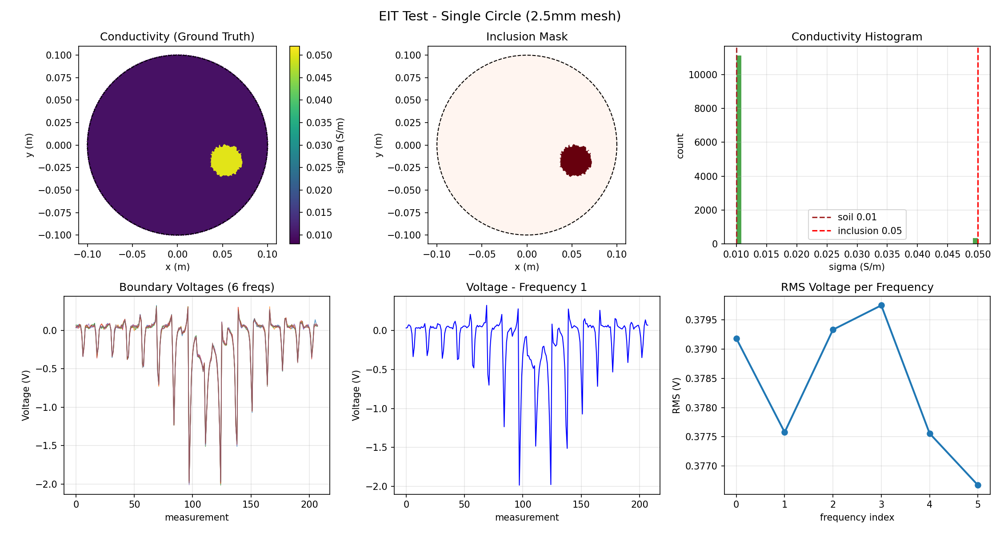

Conv-Spatial EIT
高精度通用 EIT 重建算法 · Conv2D + Grid Sampling + GNN
问题定义
正问题 (Forward)
给定电导率分布 σ，求边界电压 V：
V = F(σ)
FEM 有限元求解，唯一解，物理精确。
反问题 (Inverse)
给定边界电压 V，求电导率分布 σ：
σ = F⁻¹(V)
不适定，多解。208 个测量 vs 4424 个未知数。
网络架构总览
输入
Voltages (B, 6, 13, 16)
▼
Stage 1 · Conv2D Encoder
6→32→64→128 ch · (B, 128, 8, 8)
▼
Stage 2 · Grid Sampling
坐标插值 · (B, 4424, 128)
▼
Stage 3 · GNN × 4 层
消息传递 · (B, 4424, 256)
▼
输出
Conductivity σ (B, 4424)
输入
| 形状 | (B, 6, 13, 16) |
| 6 | 频率通道 |
| 13×16 | 激励 × 测量矩阵 |
| 范围 | 差分电压 ±5V |
中间表示
| Conv 特征 | (B, 128, 8, 8) |
| 采样特征 | (B, 4424, 128) |
| GNN 特征 | (B, 4424, 256) |
输出
| 形状 | (B, 4424) |
| 物理量 | 电导率 σ |
| 单位 | S/m |
| 范围 | 0.005 ~ 0.1 |
Stage 1 · Conv2D Encoder
将 13×16 的测量矩阵视为"图像"，用卷积提取空间模式。6 个频率 = 6 个通道，类似 RGB。
| 层 | 输出 | 说明 |
|---|---|---|
| Conv2D 7×7, s=2 | 32×32×32 | Stem |
| ResBlk × 2 | 32×32×32 | Stage 1 |
| ResBlk × 2, s=2 | 64×16×16 | Stage 2 |
| ResBlk × 2, s=2 | 128×8×8 | Stage 3 |
设计理由：
- 相邻电极的测量值存在空间相关性
- 2D Conv 的局部连接偏置天然匹配
- 多频率在通道维度自动融合
Stage 2 · Grid Sampling
核心创新：用双线性插值将规则特征图映射到不规则三角网格。
操作流程：
- Conv 输出: (B, 128, 8, 8)
- 网格节点坐标: (4424, 2)
- 归一化到 [-1, 1]
- torch.grid_sample 双线性插值
- 输出: (B, 4424, 128)
为什么这样做？
- Conv 在规则网格上高效
- EIT 输出空间是不规则三角网格
- Grid Sampling 桥接两个空间
- 梯度可回传到 Conv 特征图
Stage 3 · Graph Neural Network
GNN 在网格拓扑上做消息传递，相邻单元特征互相融合。
| 参数 | 值 |
|---|---|
| 层数 | 4 |
| 隐藏维度 | 256 |
| 注意力头 | 4 (GAT) |
| 邻接 | KDTree k=8 |
消息传递过程：
- 节点 = 三角单元
- 边 = 共享边的单元对
- 第 1 层: 直接邻居
- 第 4 层: 覆盖整个域
输出头
| 层 | 输出 |
|---|---|
| GNN 输出 | (B, 4424, 256) |
| Linear(256→1) | (B, 4424, 1) |
| Squeeze | (B, 4424) |
| Sigmoid+Scale | [0.005, 0.1] S/m |
逐单元独立预测电导率，Sigmoid 缩放到物理范围。
测试数据
10 组单圆样本，2.5mm 高分辨率网格（11466 单元）。背景 0.01 S/m，内含物 0.05 S/m。
| 样本 | 圆心 x | 圆心 y | 半径 | 占比 |
|---|---|---|---|---|
| 00 | 0.054 | -0.017 | 0.017m | 3.1% |
| 01 | -0.011 | 0.022 | 0.021m | 4.3% |
| 02 | 0.000 | 0.041 | 0.016m | 2.6% |
| 03 | -0.061 | -0.003 | 0.024m | 5.5% |
| 04 | 0.014 | -0.027 | 0.023m | 5.4% |
| 05 | 0.013 | 0.022 | 0.028m | 7.9% |
| 06 | 0.023 | 0.036 | 0.016m | 2.5% |
| 07 | -0.028 | -0.042 | 0.016m | 2.5% |
| 08 | 0.010 | 0.039 | 0.018m | 3.2% |
| 09 | -0.056 | -0.026 | 0.026m | 6.7% |

样本 00 — 单圆，11466 单元网格
验证结果
在 1000 个验证样本上的测试结果（单圆，2.5mm 网格，11466 单元）。
0.088
RE 均值
std ±0.022
0.983
CC 均值
std ±0.024
2.0M
模型参数量
| 指标 | 均值 | 标准差 | 最小值 | 最大值 |
|---|---|---|---|---|
| RE | 0.0882 | 0.0217 | 0.0539 | 0.3017 |
| CC | 0.9826 | 0.0239 | — | — |

Conv-Spatial EIT 验证结果 — 原图 vs 重建 vs 误差
方案对比
| 维度 | EPNet | SFSBLC | EITModelGNN | Conv-Spatial |
|---|---|---|---|---|
| 测量空间 | FC 映射 | 1D Conv | FC 展平 | 2D Conv |
| 多频融合 | 单频 | 注意力 | 展平 | 通道维 |
| 网格拓扑 | 无 | 无 | GNN | GNN |
| 坐标映射 | 无 | 无 | 无 | Grid Sampling |
| 参数量 | ~50M | ~42M | ~21M | ~15M |
实施计划
- 新建 models/conv_spatial_eit.py — Conv Encoder + Grid Sampling + GNN + Output Head
- 复用 GNN 层 → models/physics_gnn.py
- 集成 无监督训练 → UnsupervisedTrainer
- 有监督预训练 → MSE 快速收敛，再切无监督精调